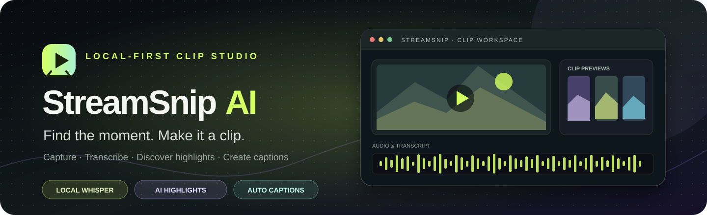

Capture or import
Record supported Twitch and YouTube live streams, or bring in local videos and VOD files for clipping.

Capture multiple creators live, process recorded VODs in their own folders, find standout moments, and publish reviewed clips directly through connected social accounts. StreamSnip keeps the core workflow local and lets creators choose their own AI and transcription tools.
Capture, understand, shape, and export without bouncing between a pile of tools.
Record supported Twitch and YouTube live streams, or bring in local videos and VOD files for clipping.
Transcribe with local Whisper and rank moments with hook words, Ollama, Gemini, or Hugging Face.
Choose karaoke or classic captions, presets, fonts, colors, word timing, size, and placement.
Render in 9:16, 16:9, 1:1, or 4:5 with flexible portrait layouts and framing options.
Add streamer credit, custom branding, and matching caption files.
Gemini, Ollama, or Hugging Face can write titles and descriptions using the same provider selected for highlight analysis. Hook Words and provider failures use transcript-based fallback copy.
Every finished clip gets a matching TXT sidecar with a post-ready title, transcript-grounded description, creator credit when available, and hashtags.
Edit the caption, choose connected Zernio accounts, and send the clip directly. Manual upload remains available as a fallback.
The next major update puts live capture and direct publishing first. These features are being integrated and tested before a new installer is released.
Choose connected Zernio accounts, edit each clip's title and description, publish now or schedule, and track progress. Creator Live and Recorded VOD clips appear in the same review gallery.
A simple single-source Start/Stop control stays at the top of the app. Each saved creator also gets independent Start Live / Stop Live controls, so you can stop one stream without interrupting the others.
Every creator gets a watched VOD inbox, separate recorded-VOD clips, processed originals, and a failed folder. Live output never gets mixed with VOD output.
Use the built-in local Whisper engine or connect your own CLI transcriber or script with timestamped JSON output. No StreamSnip API key is required for local tools.
Optional audio and caption censoring never removes a candidate, lowers its viral score, or blocks publishing. Creators decide whether to censor or keep the original.
Local capture, transcription, and rendering need no API key. Add Zernio for direct publishing or a provider key only when you choose hosted AI.
Give StreamSnip AI a live source or a recording. It handles the repetitive work, while you control each creator, review every clip, and choose where it gets published.
Read the quick startStart a supported live capture or select a local video.
Transcribe speech and score promising moments.
Set duration, format, layout, captions, and branding.
Keep the clips you like, export them, or publish via Zernio.
StreamSnip AI needs no API key for local capture, local transcription, or rendering. Add Zernio only for direct publishing, and add a hosted AI key only if you choose a cloud analysis provider.
Get the current Windows installer, explore the source, or follow the upcoming 4.0 development. This repository uses a proprietary non-commercial source-available licence; read LICENSE before use.